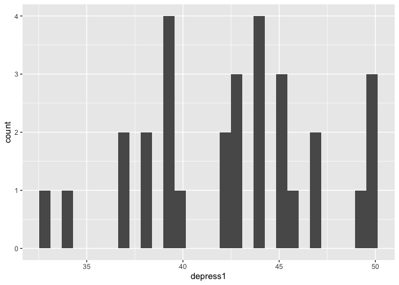
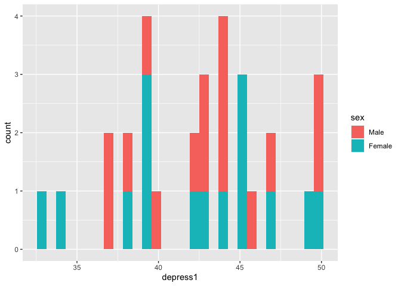
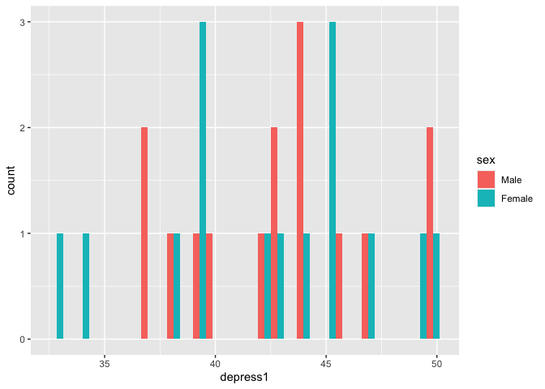
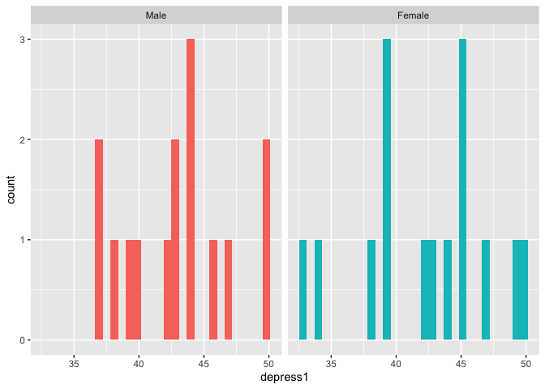
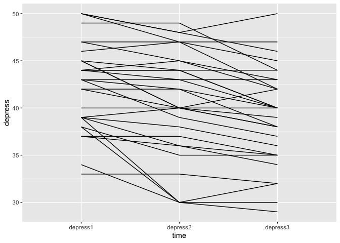
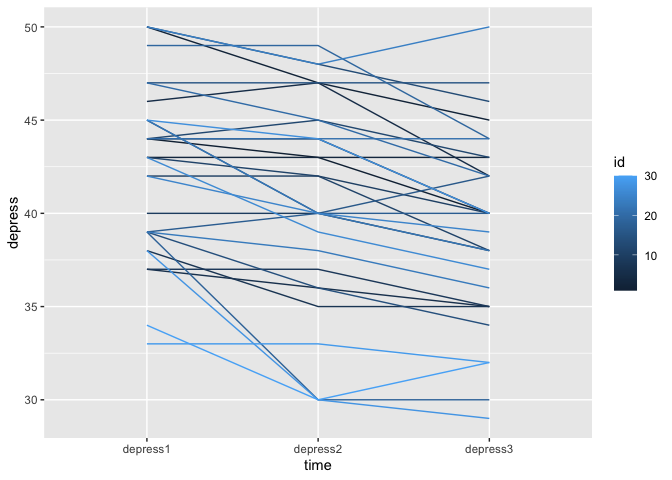
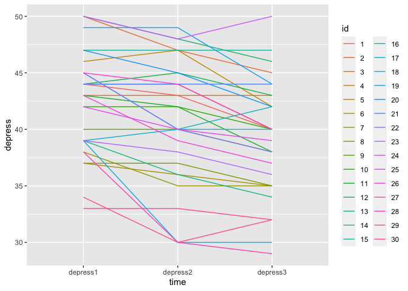
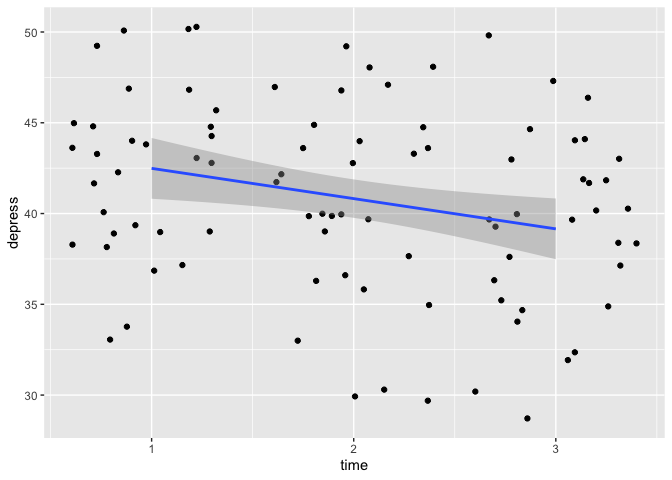

R for psychologists - just dive into it!
R requires you to be proficient in R in a different way than SPSS . Once you are proficient enough in R, you have a gazillion tools to do more or less anything you want to do, be it analysing complex data, a simple linear regression, writing a blog or making interactive data portals . RStudio is a completely blank slate, no data, no fancy stuff, just a program .
I recently was talking with a good friend and brilliant researcher regarding the advantages of R. As you can guess, I was the advocate. Coming from psychology, we are mainly taught to use “simple” analysis tools, and mainly SPSS. I never liked SPSS, even as a student. not knowing of any possible alternatives or what could be improved, I just thought the whole thing felt too black-boxy. But it is a convenient tool, when the data is already in a relatively clean format, and the analyses you want to do are straight forward, and you don’t mind not knowing exactly the formula SPSS uses to calculate your results.
Now, R, on the other hand, requires you to be proficient in it in a different way than SPSS. It is hard, in R, to just type (or click) some stuff and get some results without haveing to work a little for it. In my opinion, this is a positive, but it also can create a barrier for those who find coding scary or just don’t have the interest or time to sit down and literally learn a new language. However, the benefit once you have done so, in my opinion, vastly out-weighs the disadvantage. Once you are proficient enough in R, and amazing realm of possibilities opens up, and you have a gazillion tools to do more or less anything you want to do, be it analysing complex data, a simple linear regression, writing a blog or making interactive data portals.
So, this will be the first in my series of R for psychologists. We dive straight into it, I’ll assume you have installed both R and RStudio, and are capable of opening RStudio. We will start with reading in SPSS data, looking at the data, do some simple plots, and then a simple linear model.
RStudio - the quick tour.
RStudio will look completely different than SPSS, and it will take you some time to get comfortable with that. Firstly, you do not have to have any data open to have RStudio open, when you open RStudio you have a completely blank slate. No data, no fancy stuff, just a program ready to do your bidding.
The first thing we will do is make a Project that will be where we put all the stuff we will be working on during this series. At the top right of Rstudio, there is a blue icon with the text Project: (None) next to it, click it and choose New Project - New directory - New Package, and choose what to call your project and where to put it. Let’s say for simplicity to call it “R_start” and place it on your Desktop.
Rstudio will now create a folder called “R_start” on your Desktop and will go into this folder, so that anything you do will happen from within that folder.
Lets also open a file we can place our script in (or our Syntax if you want). Click the little green circle with the pluss sign, and open an RScript
You’ll have something that looks like this once you’ve done so:

The top left quadrant is where your script will go (i.e. is where we are building the syntax). The bottom left is the console that executes your commands or you script. Whenever we want to do something, it is in the console that we do it. In a way, this is where R as a program lives, the rest or RStudio is just a way of communicating with it. The top right quadrant will show you any data (called objects in R) that you have active and available, and the bottom right is a place you can navigate to where you want to be working. The bottom right hows you the content of the folder you are in, which is the “R_start” folder on your Dekstop.
Let’s download some data that we can work with. This little bit of code, will download an dataset from the SPSS survival manual, and place it in your current folder.
In your console, type:
download.file("http://spss.allenandunwin.com.s3-website-ap-southeast-2.amazonaws.com/Files/experim.zip",
destfile = "experim.zip")
You will now see, in the Files pane in the bottom right, that a file named experim.zip is there. For us to use the data you need to unzip/extract the file. Once you have done so, a file called experim.sav will be in there too. This will be our data for now.
Open SPSS data in R
R has about a gazillion handy tools to open data from different sources. My personal favourite, working with data from so many sources, is using the rio package, which opens more or less any file you give it.
To use an R package, like rio, you need to install it. We will also install the tidyverse meta-package (it contains several packages) which gives us easier ways to work with data than base R does.
In your console, type:
install.packages("rio")
install.packages("tidyverse")
Once you do this, your console will start being very busy. Rio is a large package, because it does so many things, so it takes a bit of time to install.
Once it is installed, you can start using it. First by letting R know you want to use it, then using its import function.
Here, we will read in the data from the sav file, and assign it to an object we will call eData.
In your console, type:
library(rio)
eData = import("experim.sav")
In your top right quandrant now, your environment pane will list one object called eData , that has 30 observations (cases) and 18 variables. Lets look at it!
In your console, type:
library(tidyverse)
## ── Attaching packages ────────────────────────────────────── tidyverse 1.3.0 ──
## ✓ ggplot2 3.3.0 ✓ purrr 0.3.4
## ✓ tibble 3.0.1 ✓ dplyr 0.8.5
## ✓ tidyr 1.0.3 ✓ stringr 1.4.0
## ✓ readr 1.3.1 ✓ forcats 0.5.0
## ── Conflicts ───────────────────────────────────────── tidyverse_conflicts() ──
## x dplyr::filter() masks stats::filter()
## x dplyr::lag() masks stats::lag()
glimpse(eData)
## Rows: 30
## Columns: 18
## $ id <dbl> 4, 10, 9, 3, 12, 11, 6, 5, 8, 13, 14, 1, 15, 7, 2, 27, 25, 1…
## $ sex <dbl> 1, 1, 1, 1, 1, 1, 1, 1, 1, 1, 1, 1, 1, 1, 1, 2, 2, 2, 2, 2, …
## $ age <dbl> 23, 21, 25, 30, 45, 22, 22, 26, 23, 21, 23, 19, 23, 19, 21, …
## $ group <dbl> 2, 2, 1, 1, 2, 1, 2, 1, 2, 1, 2, 1, 1, 1, 2, 1, 1, 1, 2, 1, …
## $ fost1 <dbl> 50, 47, 44, 47, 46, 39, 32, 44, 40, 47, 38, 32, 39, 36, 37, …
## $ confid1 <dbl> 15, 14, 12, 11, 16, 13, 21, 17, 22, 20, 28, 20, 21, 24, 29, …
## $ depress1 <dbl> 44, 42, 40, 43, 44, 43, 37, 46, 37, 50, 39, 44, 47, 38, 50, …
## $ fost2 <dbl> 48, 45, 39, 42, 45, 40, 33, 37, 40, 45, 37, 28, 35, 32, 36, …
## $ confid2 <dbl> 16, 15, 18, 16, 16, 20, 22, 20, 23, 25, 27, 25, 26, 28, 30, …
## $ depress2 <dbl> 44, 42, 40, 43, 45, 42, 36, 47, 37, 48, 36, 43, 47, 35, 47, …
## $ fost3 <dbl> 45, 44, 36, 41, 43, 39, 32, 32, 40, 46, 32, 23, 35, 30, 34, …
## $ confid3 <dbl> 14, 18, 19, 20, 20, 22, 23, 26, 26, 27, 29, 30, 30, 32, 34, …
## $ depress3 <dbl> 40, 40, 38, 43, 43, 38, 35, 42, 35, 46, 34, 40, 47, 35, 45, …
## $ exam <dbl> 52, 55, 58, 60, 58, 62, 59, 70, 60, 70, 72, 82, 79, 80, 90, …
## $ mah_1 <dbl> 0.5699842, 1.6594031, 3.5404715, 2.4542143, 0.9443036, 1.625…
## $ DepT1gp2 <dbl> 0, 0, 0, 0, 0, 0, 0, 1, 0, 1, 0, 0, 1, 0, 1, 1, 0, 1, 0, 0, …
## $ DepT2Gp2 <dbl> 0, 0, 0, 0, 1, 0, 0, 1, 0, 1, 0, 0, 1, 0, 1, 0, 0, 1, 0, 0, …
## $ DepT3gp2 <dbl> 0, 0, 0, 0, 0, 0, 0, 0, 0, 1, 0, 0, 1, 0, 1, 0, 0, 0, 0, 0, …
glimpse is a function you can use to get a brief idea of what the data look like. Here again, it tells you the number of observations (cases) and the number of variables, what the variables are called, and what their type is. As is the norm with SPSS, all data, even categorical data is coded into numbers. We dont need to do this is R, as R can run numerical operations on string/character variables, because it automatically converts them into dummies.
Lets have a look at one variable we know is not truly numeric, the sex column is obivously dummy coded. You can look directly at a single variable using the $ sign:
eData$sex
## [1] 1 1 1 1 1 1 1 1 1 1 1 1 1 1 1 2 2 2 2 2 2 2 2 2 2 2 2 2 2 2
## attr(,"format.spss")
## [1] "F8.0"
## attr(,"labels")
## male female
## 1 2
Neat, the console output tells us that male is coded as 1 and female is coded as 2. Lets recode the sex variable right away, so we can look at some summaries. In this case, I’ll use the mutate function, which adds or alters a variable that already exists in the data
mutate(eData, sex = factor(sex, labels=c("Male","Female")))
## id sex age group fost1 confid1 depress1 fost2 confid2 depress2 fost3
## 1 4 Male 23 2 50 15 44 48 16 44 45
## 2 10 Male 21 2 47 14 42 45 15 42 44
## 3 9 Male 25 1 44 12 40 39 18 40 36
## 4 3 Male 30 1 47 11 43 42 16 43 41
## 5 12 Male 45 2 46 16 44 45 16 45 43
## 6 11 Male 22 1 39 13 43 40 20 42 39
## 7 6 Male 22 2 32 21 37 33 22 36 32
## 8 5 Male 26 1 44 17 46 37 20 47 32
## 9 8 Male 23 2 40 22 37 40 23 37 40
## 10 13 Male 21 1 47 20 50 45 25 48 46
## 11 14 Male 23 2 38 28 39 37 27 36 32
## 12 1 Male 19 1 32 20 44 28 25 43 23
## 13 15 Male 23 1 39 21 47 35 26 47 35
## 14 7 Male 19 1 36 24 38 32 28 35 30
## 15 2 Male 21 2 37 29 50 36 30 47 34
## 16 27 Female 20 1 41 16 45 40 14 44 38
## 17 25 Female 24 1 38 14 42 37 14 40 35
## 18 19 Female 27 1 42 15 49 41 13 49 40
## 19 18 Female 23 2 44 13 39 39 20 30 34
## 20 23 Female 22 1 32 22 39 31 18 38 32
## 21 21 Female 46 1 39 21 44 40 19 44 38
## 22 26 Female 19 2 42 13 43 38 20 39 36
## 23 29 Female 22 1 37 28 33 38 22 33 36
## 24 17 Female 37 1 41 29 39 40 22 40 40
## 25 20 Female 32 2 43 17 47 36 26 45 34
## 26 28 Female 30 2 46 20 38 40 28 30 37
## 27 22 Female 25 2 30 24 45 28 28 40 25
## 28 24 Female 21 2 33 12 50 29 20 48 25
## 29 16 Female 45 2 40 22 45 30 35 40 25
## 30 30 Female 21 2 39 21 34 36 30 30 30
## confid3 depress3 exam mah_1 DepT1gp2 DepT2Gp2 DepT3gp2
## 1 14 40 52 0.5699842 0 0 0
## 2 18 40 55 1.6594031 0 0 0
## 3 19 38 58 3.5404715 0 0 0
## 4 20 43 60 2.4542143 0 0 0
## 5 20 43 58 0.9443036 0 1 0
## 6 22 38 62 1.6257058 0 0 0
## 7 23 35 59 4.1744717 0 0 0
## 8 26 42 70 1.0261059 1 1 0
## 9 26 35 60 1.7053103 0 0 0
## 10 27 46 70 3.0873214 1 1 1
## 11 29 34 72 2.9140163 0 0 0
## 12 30 40 82 0.3469978 0 0 0
## 13 30 47 79 1.5886241 1 1 1
## 14 32 35 80 1.5076582 0 0 0
## 15 34 45 90 10.2401804 1 1 1
## 16 18 40 56 1.1776467 1 0 0
## 17 19 39 53 1.0564668 0 0 0
## 18 20 44 59 3.8748910 1 1 0
## 19 22 30 64 2.7101641 0 0 0
## 20 22 36 63 3.5488594 0 0 0
## 21 23 44 64 0.5007192 0 0 0
## 22 23 37 63 1.4739118 0 0 0
## 23 26 32 67 9.1295758 0 0 0
## 24 27 40 71 6.2065842 0 0 0
## 25 28 42 73 1.7190981 1 1 0
## 26 29 29 80 1.5015533 0 0 0
## 27 30 38 83 1.9240376 1 0 0
## 28 30 50 85 7.5576411 1 1 1
## 29 32 42 78 1.1884922 1 0 0
## 30 32 32 84 6.0455901 0 0 0
Now, notice that I did not actually put anything to the left of that command. I have not saved the change I made. I usually never save such a change, untill I have tested it, and seen it does what I wanted. In this case, I can see it did, so I’ll overwrite the old eData with the new.
eData = mutate(eData, sex = factor(sex, labels=c("Male","Female")))
Up untill now, we have done everything in the console. This means that if we close RStudio now, everything we have done it lost! no! No worries though, that’s why we opened a script, we just need to put everything we have done into the script!
Copy this and place it into the empty script in your top left quadrant.
library(rio)
library(tidyverse)
# Import the data
eData = rio::import("SPSS/experim.sav")
# Recode sex to Male and Female
eData = mutate(eData, sex = factor(sex, labels=c("Male","Female")))
This now works much like an SPSS syntax. You can run it all, either by selecting it all and pressing cmd/ctrl + shift + enter or clicking the Run button on the top left of the script quadrant.
Notice there are also some lines in there that have a # in front. These are comment lines, they will not be “run” in the console, they are just there for our safe keeping.
The elusive, and brilliant, pipe
If you have heard of tidyverse before, you have heard of the pipe. And you likely are wondering what that is all about. A pipe is brilliant, though can be a little odd to understand if you have never encountered something like it before.
A pipe, in tidyverse it is the sign %>%, is something we use to help us do many operations on the same data/object, without having to stop and store things in between.
An equivalen way of writing our script, and my preference is:
library(rio)
library(tidyverse)
# Start with importing the data
eData = rio::import("SPSS/experim.sav") %>%
# then recode sex to Male and Female
mutate(sex = factor(sex, labels=c("Male","Female")))
Notice how we are not assigning eData twice, we are going straight from import, right into mutating, and it’s all saved directly to eData. We can now also read it more like a sentance, “Grab this data, then mutate (i.e. change) the sex data into a factor.”
The end result of eData is the same, it’s just cleaner. In this example, which is so short, it has little effect, but once your scripts get complicated, being able to read what happens to the data like this is very convenient.
Lets have a look at our data again, lets glimpse it:
eData %>% glimpse()
## Rows: 30
## Columns: 18
## $ id <dbl> 4, 10, 9, 3, 12, 11, 6, 5, 8, 13, 14, 1, 15, 7, 2, 27, 25, 1…
## $ sex <fct> Male, Male, Male, Male, Male, Male, Male, Male, Male, Male, …
## $ age <dbl> 23, 21, 25, 30, 45, 22, 22, 26, 23, 21, 23, 19, 23, 19, 21, …
## $ group <dbl> 2, 2, 1, 1, 2, 1, 2, 1, 2, 1, 2, 1, 1, 1, 2, 1, 1, 1, 2, 1, …
## $ fost1 <dbl> 50, 47, 44, 47, 46, 39, 32, 44, 40, 47, 38, 32, 39, 36, 37, …
## $ confid1 <dbl> 15, 14, 12, 11, 16, 13, 21, 17, 22, 20, 28, 20, 21, 24, 29, …
## $ depress1 <dbl> 44, 42, 40, 43, 44, 43, 37, 46, 37, 50, 39, 44, 47, 38, 50, …
## $ fost2 <dbl> 48, 45, 39, 42, 45, 40, 33, 37, 40, 45, 37, 28, 35, 32, 36, …
## $ confid2 <dbl> 16, 15, 18, 16, 16, 20, 22, 20, 23, 25, 27, 25, 26, 28, 30, …
## $ depress2 <dbl> 44, 42, 40, 43, 45, 42, 36, 47, 37, 48, 36, 43, 47, 35, 47, …
## $ fost3 <dbl> 45, 44, 36, 41, 43, 39, 32, 32, 40, 46, 32, 23, 35, 30, 34, …
## $ confid3 <dbl> 14, 18, 19, 20, 20, 22, 23, 26, 26, 27, 29, 30, 30, 32, 34, …
## $ depress3 <dbl> 40, 40, 38, 43, 43, 38, 35, 42, 35, 46, 34, 40, 47, 35, 45, …
## $ exam <dbl> 52, 55, 58, 60, 58, 62, 59, 70, 60, 70, 72, 82, 79, 80, 90, …
## $ mah_1 <dbl> 0.5699842, 1.6594031, 3.5404715, 2.4542143, 0.9443036, 1.625…
## $ DepT1gp2 <dbl> 0, 0, 0, 0, 0, 0, 0, 1, 0, 1, 0, 0, 1, 0, 1, 1, 0, 1, 0, 0, …
## $ DepT2Gp2 <dbl> 0, 0, 0, 0, 1, 0, 0, 1, 0, 1, 0, 0, 1, 0, 1, 0, 0, 1, 0, 0, …
## $ DepT3gp2 <dbl> 0, 0, 0, 0, 0, 0, 0, 0, 0, 1, 0, 0, 1, 0, 1, 0, 0, 0, 0, 0, …
We used the pipe again, so I said “Take eData and glimpse it”.
Now you’ll see the “sex” variable no longer says <dbl> it says <fct> glimpse is telling us that is it not a number, but a factor.
Let’s count how many we have of each sex.
eData %>%
group_by(sex) %>%
tally()
## # A tibble: 2 x 2
## sex n
## <fct> <int>
## 1 Male 15
## 2 Female 15
Again, we are saying “Take eData, group it by the unique values in variable sex and tally them (i.e. count them)”. We have 15 of each, nice.
A simple plot
It’s always a good idea to have a look at what your data looks like. Theres a column calles depress1, which is depression at baseline, this is after all data from a depression intervention experiment.
Lets have a look at its distribution:
eData %>%
ggplot(aes(x=depress1)) +
geom_histogram()
## `stat_bin()` using `bins = 30`. Pick better value with `binwidth`.

We are using tidyverse’s ggplot to make some pretty plots. It’s quite something else than what SPSS gives you.
Again, with the pipe we are saying “Take eData create a ggplot with variable depress1 as the x-axis, and create a histogram”.
The observant might notice that after ggplot there is a + not a %>%. I’ll not go into that, just know in ggplot we add more geoms (type of plots) to eachother with +.
Maybe we would like to see the difference between men and women? We can do that is several different ways:
# Bars coloured but on top of each other
eData %>%
ggplot(aes(x=depress1, fill=sex)) +
geom_histogram()
## `stat_bin()` using `bins = 30`. Pick better value with `binwidth`.

# Bars next to each other
eData %>%
ggplot(aes(x=depress1, fill=sex)) +
geom_histogram(position="dodge")
## `stat_bin()` using `bins = 30`. Pick better value with `binwidth`.

# In different subplots
eData %>%
ggplot(aes(x=depress1, fill=sex)) +
geom_histogram(show.legend = F) +
facet_wrap(~sex)
## `stat_bin()` using `bins = 30`. Pick better value with `binwidth`.

The tall data format
If you notice, there are actually three variables with depress in them. This was measures three times!
R prefers data to be, long or tall, in contrast to SPSS which likes it wide. Wide means that each person has one row, and all data collected on them is in distinct variables/columns. Long, or tall, means that R would rather you had one variable per parameter and several rows per person. In this case, R would prefer each person has three rows, and one variable for depression.
We can do this quite simple, like so:
eData_tall = eData %>%
gather(time, depress, c("depress1", "depress2", "depress3")) %>%
arrange(id)
## Warning: attributes are not identical across measure variables;
## they will be dropped
eData_tall %>% head
## id sex age group fost1 confid1 fost2 confid2 fost3 confid3 exam mah_1
## 1 1 Male 19 1 32 20 28 25 23 30 82 0.3469978
## 2 1 Male 19 1 32 20 28 25 23 30 82 0.3469978
## 3 1 Male 19 1 32 20 28 25 23 30 82 0.3469978
## 4 2 Male 21 2 37 29 36 30 34 34 90 10.2401804
## 5 2 Male 21 2 37 29 36 30 34 34 90 10.2401804
## 6 2 Male 21 2 37 29 36 30 34 34 90 10.2401804
## DepT1gp2 DepT2Gp2 DepT3gp2 time depress
## 1 0 0 0 depress1 44
## 2 0 0 0 depress2 43
## 3 0 0 0 depress3 40
## 4 1 1 1 depress1 50
## 5 1 1 1 depress2 47
## 6 1 1 1 depress3 45
I did quite a lot there, so lets go through it. I said “Take eData, gather the variables and place the repeating column names in a variable called time and the values in the columns into a variable called depress, and sort (arrange) the observarions (rows/cases) by the id”. I placed (assigned) the output of that to a object I’m calling eData_tall, and then asking to see the first rows of it, so i can inspect the effect. As you can see, person with id==1 has three rows now, one for each depress.
We can plot this now, just to see what this has made it possible for us to do. We can now plot each persons change on depression score over the three measurements:
eData_tall %>%
ggplot(aes(x=time, y=depress, group=id)) +
geom_line()

I’m saying _“Take the data in eData_tall make a plot with the variable time on the x-axis, the variable depress as the y-axis, and group the lines by the id”.
We can also colour the lines by the id, so we can see each person’s trajecotry better:
eData_tall %>%
ggplot(aes(x=time, y=depress, group=id)) +
geom_line(aes(colour=id))

and there we actually see a problem! in the data, id is read as a double precision number to the colour bar provides shades of a colour. But, these are distinctly different people! This issue traces all the way back to the original eData so we are going to make sure we fix that, and then recreate the eData_tall data based on that again.
Make sure now, that you update your script, not just type in the console. Your updated script should now be something like so, to make sure we fix this forever!
library(rio)
library(tidyverse)
# Start with importing the data
eData = rio::import("SPSS/experim.sav") %>%
# then recode sex to Male and Female
mutate(
sex = factor(sex, labels=c("Male","Female")),
id = factor(id))
# Gather depression variables into a tall depression data format.
eData_tall = eData %>%
gather(time, depress, c("depress1", "depress2", "depress3")) %>%
arrange(id)
Our script is not update, and we can run it in its entirety by cmd/ctrl + shift + enter, or by pressing Run at the top right corner of the scripts quadrant.
Let’s try making that last plot again:
eData_tall %>%
ggplot(aes(x=time, y=depress, group=id)) +
geom_line(aes(colour=id))
 Weee! Now we have 30 distinct colours, and there is no colourbar, but a categorical legend.
Plot some regression lines!
We usually want to understand the trend in the data, right? So, let’s add a linear regression line, and some confidence intervals around this line. Sounds complicated you say? Nay! we only need to alter the depress variable into something numeric, which I’m going to cheat a bit here. I’m doing to remove all alphabetic characters from the variable, and then change it to an integer.
eData_tall %>%
mutate(time = as.integer(gsub("[[:alpha:]]","",time))) %>%
ggplot(aes(x=time, y=depress)) +
geom_jitter() +
geom_smooth(method="lm")
## `geom_smooth()` using formula 'y ~ x'

nice! So, again, we are saying “Take eData_tall, change the time variable by removing all alphabetic characters and make it into an integer. Plot this with time on the x-axis, depress on the y-axis, create a scatter plot with a little bit of random noise, and add a regression line using a linear model.”
Doing a simple linear model
There is a little bit of a decrease with time there! Let’s actually run the linear model, to see what it’s coefficients are.
lm(depress~time, data=eData_tall) %>%
summary()
##
## Call:
## lm(formula = depress ~ time, data = eData_tall)
##
## Residuals:
## Min 1Q Median 3Q Max
## -10.7333 -3.5333 0.6333 3.4167 10.8000
##
## Coefficients:
## Estimate Std. Error t value Pr(>|t|)
## (Intercept) 42.5333 0.9277 45.849 <2e-16 ***
## timedepress2 -1.8000 1.3119 -1.372 0.1736
## timedepress3 -3.3333 1.3119 -2.541 0.0128 *
## ---
## Signif. codes: 0 '***' 0.001 '**' 0.01 '*' 0.05 '.' 0.1 ' ' 1
##
## Residual standard error: 5.081 on 87 degrees of freedom
## Multiple R-squared: 0.06921, Adjusted R-squared: 0.04782
## F-statistic: 3.235 on 2 and 87 DF, p-value: 0.04416
We are a little different here. We’re going “Run a linear model predicting depress from time, in the eData_tall object, and display the summary of that.”
As you can see, there are nice little asteri there and all, it seems there is a significant decrease of depression at time 3 compared to the baseline. With a handy little function from a package called broom we can even create a table straight away.
lm(depress~time, data=eData_tall) %>%
broom::tidy()
## # A tibble: 3 x 5
## term estimate std.error statistic p.value
## <chr> <dbl> <dbl> <dbl> <dbl>
## 1 (Intercept) 42.5 0.928 45.8 1.02e-62
## 2 timedepress2 -1.8 1.31 -1.37 1.74e- 1
## 3 timedepress3 -3.33 1.31 -2.54 1.28e- 2
That is what we are covering today. And it’s covering a lot! This is probably really just throwing way too much on you way too early. But I thought it might be a good idea to just jump into it, to things you might already be comfortable doing in SPSS, and want to know how to do in R.
If we combine all we have done in this session, we can end up with a script like so:
library(rio)
library(tidyverse)
# Start with importing the data
eData = rio::import("SPSS/experim.sav") %>%
# then recode sex to Male and Female
mutate(
sex = factor(sex, labels=c("Male","Female")),
id = factor(id))
# Gather depression variables into a tall depression data format.
eData_tall = eData %>%
gather(time, depress, c("depress1", "depress2", "depress3")) %>%
mutate(time = as.integer(gsub("[[:alpha:]]","",time))) %>%
arrange(id)
# Do a linear regression on depression over time
lm(depress~time, data=eData_tall) %>%
broom::tidy()
# plot the regression
eData_tall %>%
ggplot(aes(x=time, y=depress)) +
geom_jitter() +
geom_smooth(method="lm")
2018-r-for-psychologists-just-dive-into-it,
author = "DrMowinckels",
title = "R for psychologists - just dive into it!",
url = "https://drmowinckels.io/blog/2018/r-just-dive-into-it/",
year = 2018,
doi = "https://www.doi.org/10.5281/zenodo.13273479",
updated = "Oct 7, 2024"
}